I flew to EAA AirVenture Oshkosh 2026 with my friend Shujauddin Saqib Siddiqui in his Van's RV-7A. I had been to Oshkosh before in 2024 when I drove from Bloomington, Indiana, but this was my first time flying in. My first Fisk arrival. We flew there in formation with three other RVs.
Houston. Friday, July 17.
I arrived in Houston on Friday where the plane was hangered at KDWH (David Wayne Hooks Memorial). That evening Siddiqui found cracks in the exhaust system. He got to work fixing them immediately. It was painstaking but necessary. By 3 AM Saturday morning everything was repaired and signed off. By the time we were done it was early morning.
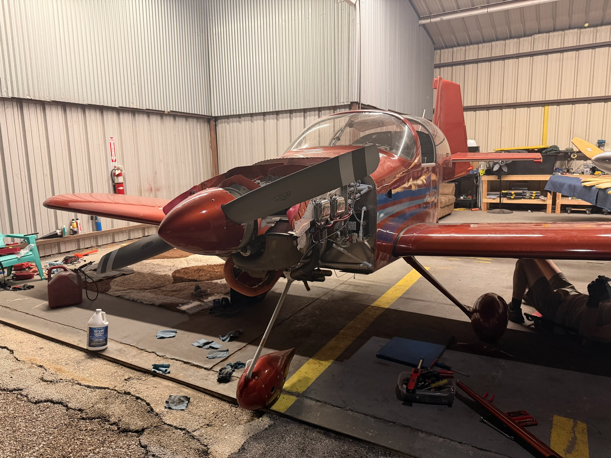
Fixing exhaust cracks at 1 AM. The departure was in five hours.
The Formation Flight. Saturday, July 18.
We joined three other RVs for a formation departure from the Houston area. The formation was reassuring. Mike, the lead pilot in his RV-6A, knew the Fisk arrival procedure well, and flying together meant we had extra eyes for traffic and navigation.
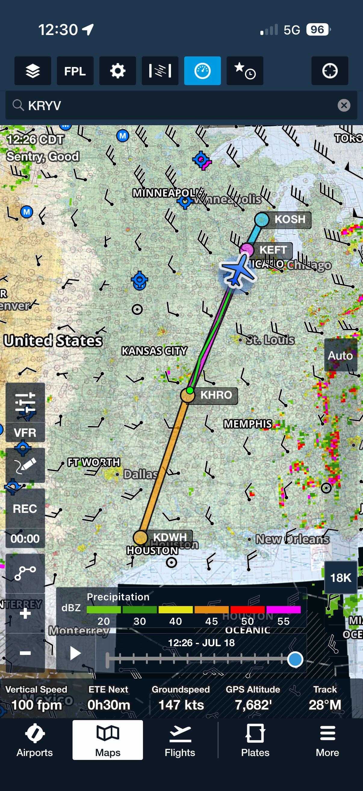
The flight plan. Houston to Oshkosh with two fuel stops.
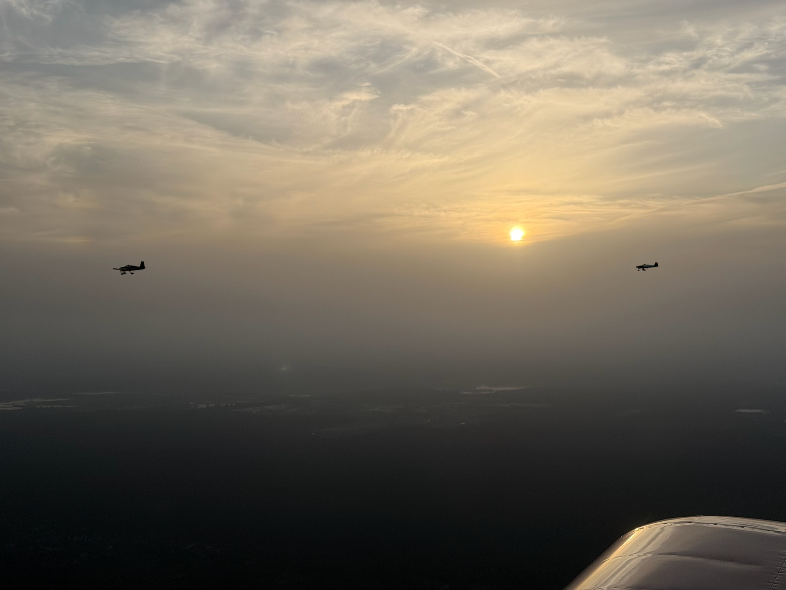
Formation of four RVs heading north.
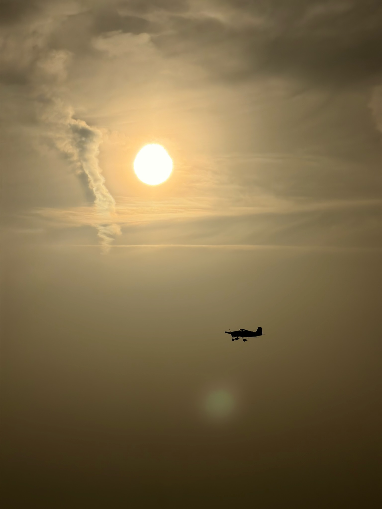
Holding position in the formation.
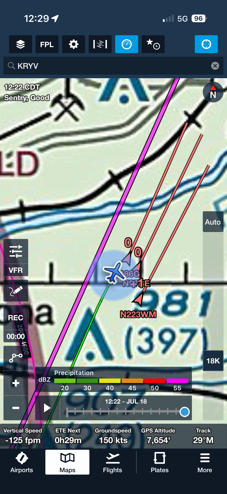
Four RVs in arrow formation.
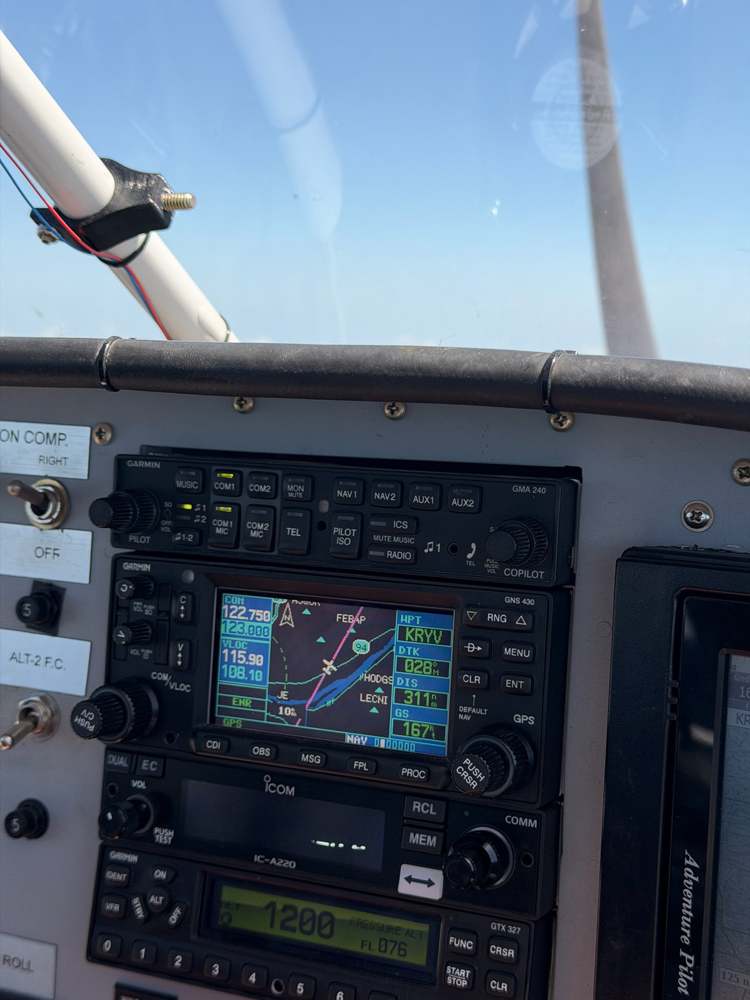
The flight deck of Siddiqui's RV-7A en route.
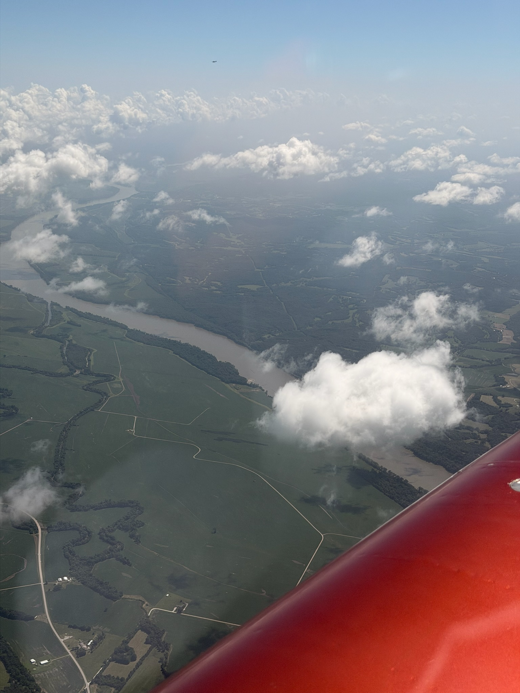
Clouds over the rivers and land of the Midwest.
We had two fuel stops along the way.
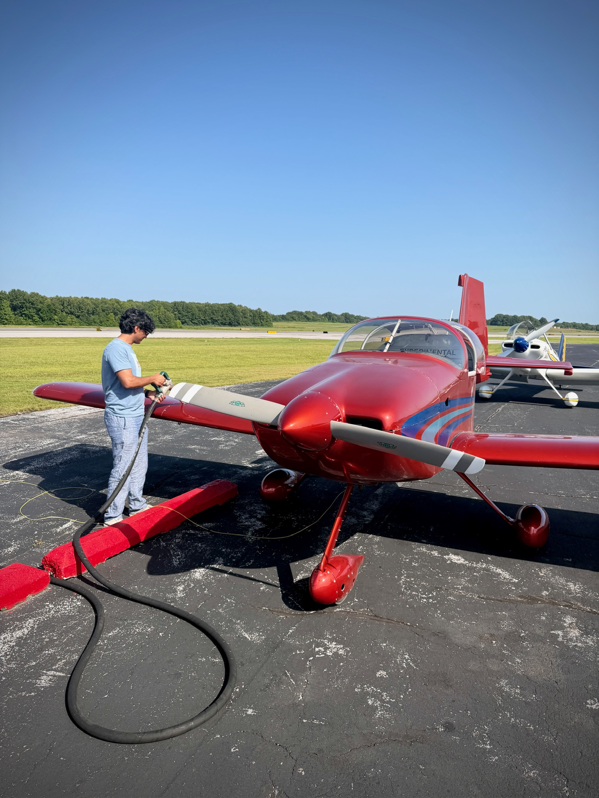
First fuel stop.
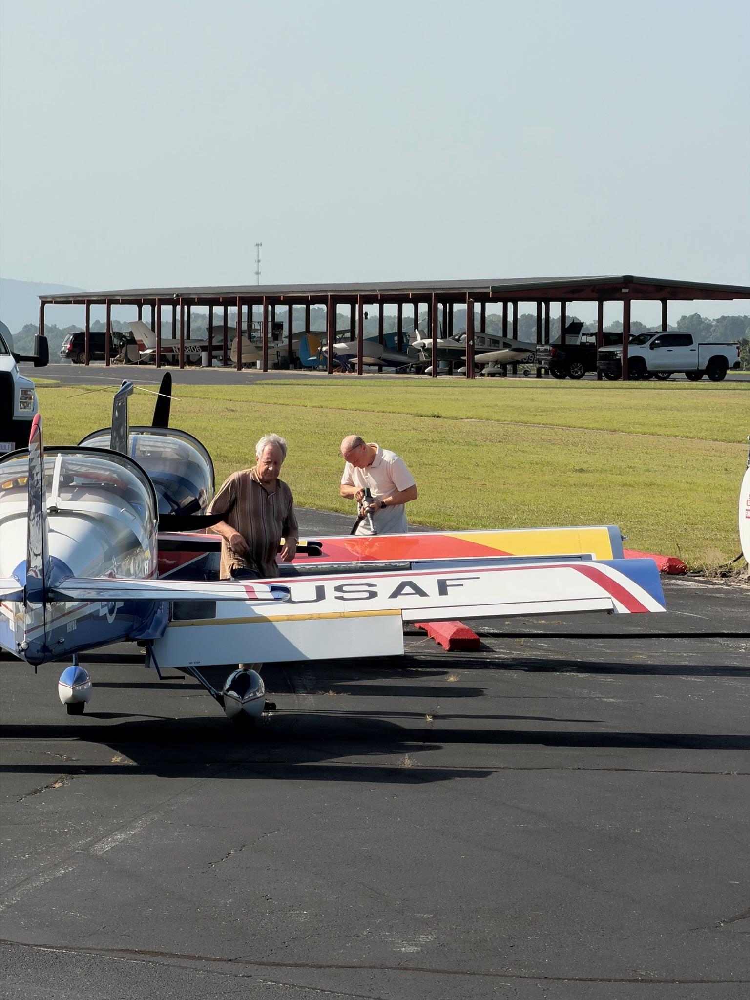
Refueling along the way.
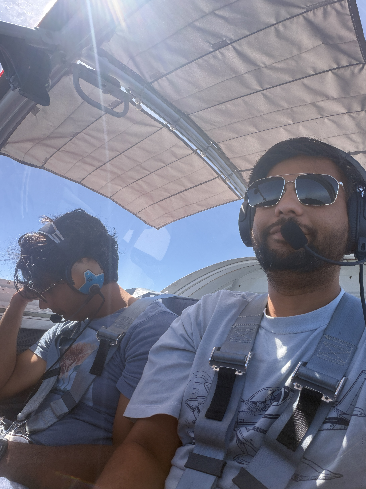
Relaxed a little on the way up.
The Arrival. KOSH Runway 27.
The Fisk arrival at Oshkosh requires aircraft to be single file at 1,800 feet MSL and 90 knots. Having the formation break up and fall into the procedure one by one was something the lead pilots handled smoothly. We entered on the downwind for Runway 27 and landed. Oshkosh.
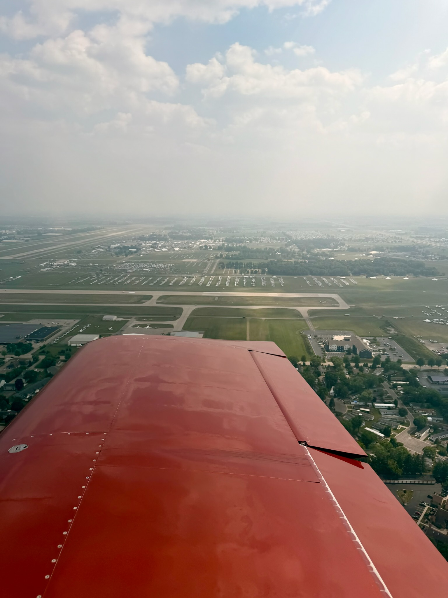
Downwind for Runway 27 at KOSH. First time seeing the field.
Camping at Oshkosh
This was my first time camping at KOSH with the airplane. There were all kinds of facilities: showers, cooking stoves, charging stations. The weather in Wisconsin was sunny and hot during the day and very cold at night.
I spent the days looking at homebuilt aircraft up close. The smaller details that you only see in person: wiring runs, finishing choices, panel layouts, cowl fit. It gave me ideas and a sense of scale for what is ahead on my own build.
I also met aviators I had only seen on YouTube. I met Hermet, the German aviator, who showed me how he designed a 360-degree camera mount in his left wing tip. It retracts flush when not in use and extends when recording. No permanent protrusion. Some German engineering.

Meeting Alexandre Frota from Brazil, who recently completed a flight around the world.
The Departure. Thursday, July 23.
Thursday came and it was time to leave. We took our time tearing down the tent and packing up. By the later afternoon most planes that needed to depart that day had already left, so the taxiways were quiet. We taxied out and departed.
There was heavy arriving traffic below us. The Fisk arrival altitude is 1,800 feet MSL and 90 knots. We had VFR flight following and were above them, so the departure was clean.
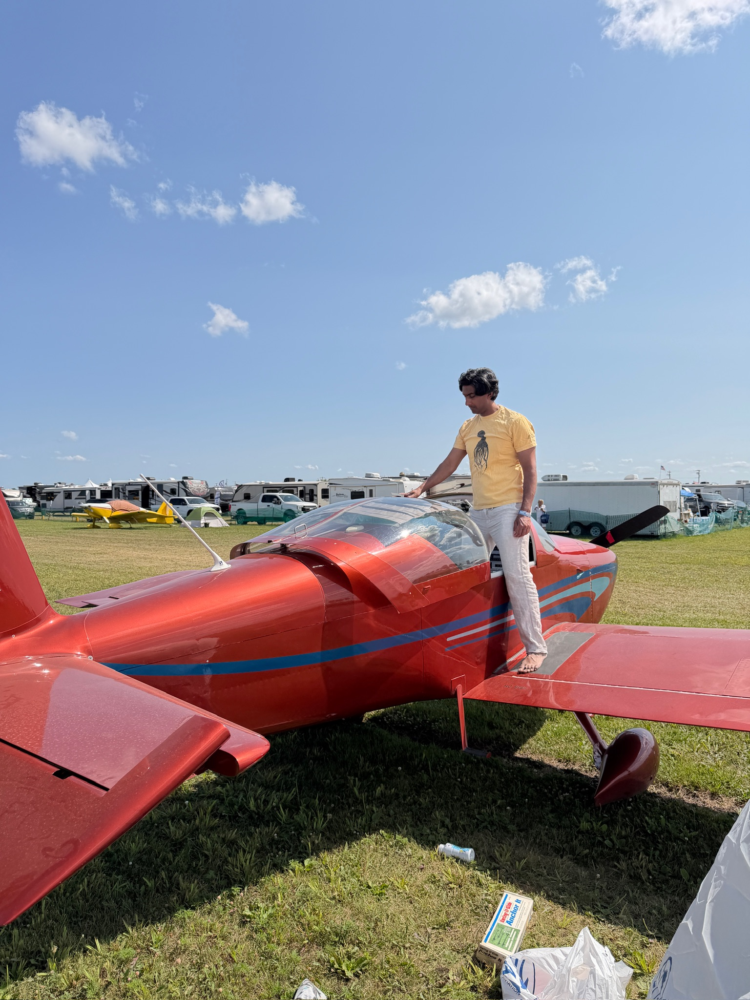
Packing up and preparing for the departure flight.
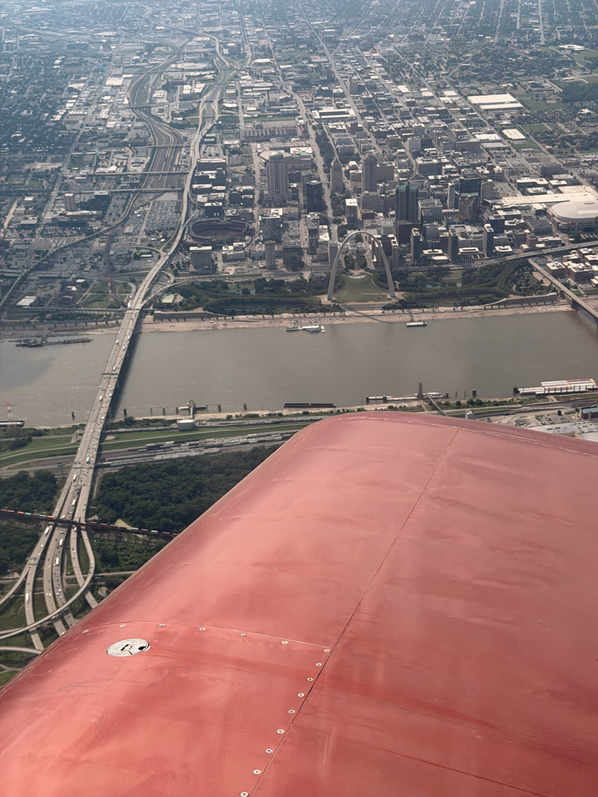
Flew near the St. Louis Arch on the way south.
Our departure leg took us through two Class C airports. First was Abraham Lincoln Capital Airport (KSPI) in Springfield, Illinois, and then Bill and Hillary Clinton National Airport (KLIT) in Little Rock, Arkansas. Both for fuel.
Weather Closing In
As we got closer to the Houston area and north Texas, the weather changed. Haze covered the surface up to about a thousand feet. Visibility was still flyable but the cloud coverage from above was closing in. At one point we were very close to IMC conditions. There were obstacles on the ground that we could not see except for their flashing tower lights.
I told Siddiqui that we should stop pushing and just land. We diverted to Livingston Municipal Airport (00R) in Livingston, Texas. It started raining shortly after we landed. We waited over an hour for a ride and drove the rest of the way to Houston (KDWH).
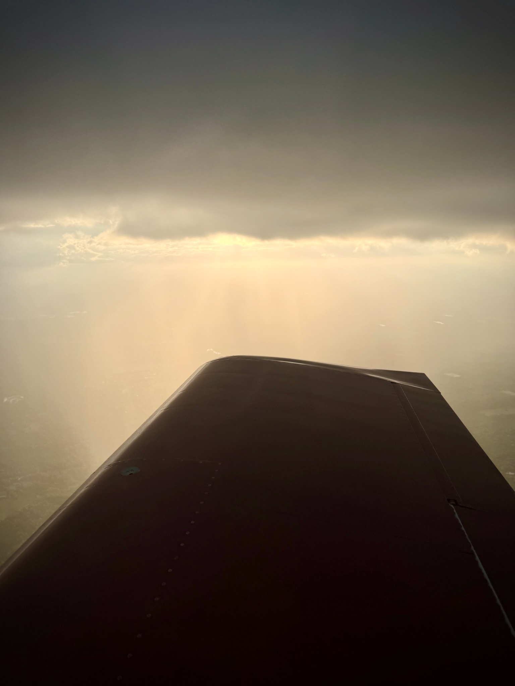
Weather closing in near Houston. This is when we decided to divert.
A good decision. The weather only got worse after we landed.